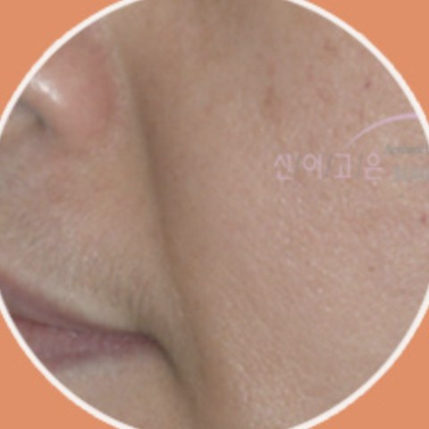
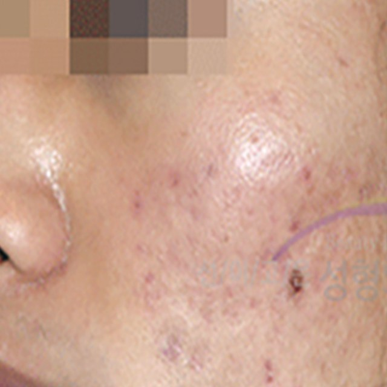
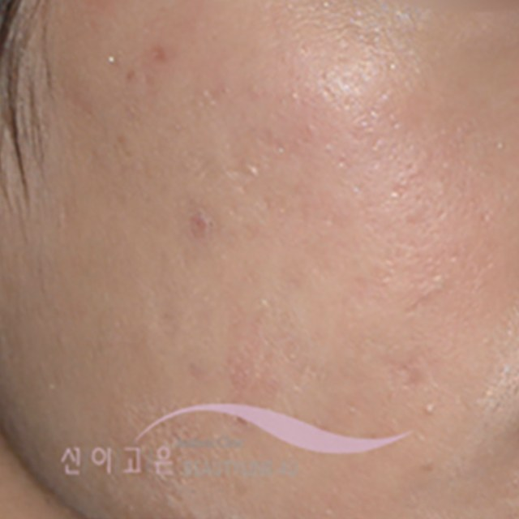
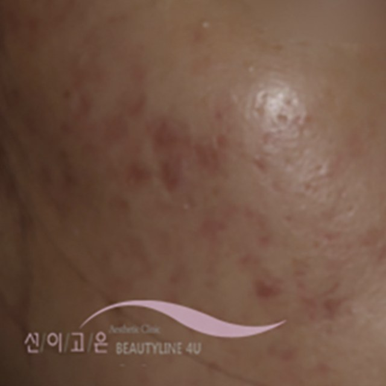
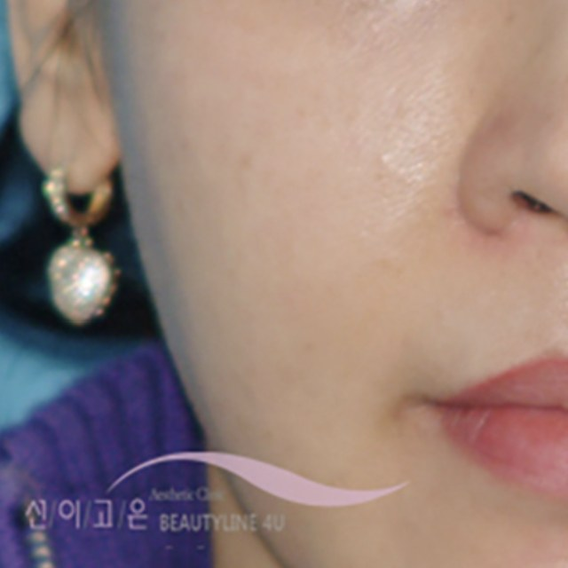
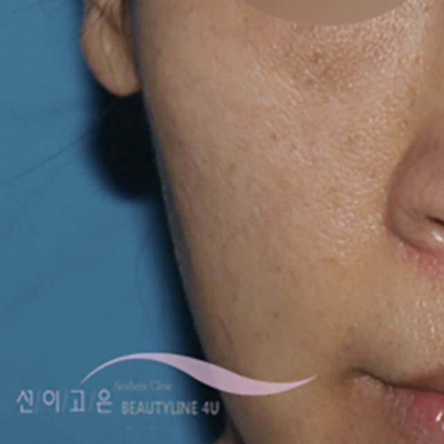

Non-surgical Care,
Personalized
Personalized non-surgical treatments addressing skin quality, facial aesthetics and individual concerns
Skin & Aesthetic Treatments
Treatments are selected and combined according to skin type, skin condition and individual concerns, and may also be planned as care before or after surgery
Procedures & Treatments
Botulinum Toxin & Dermal Fillers
Softens dynamic wrinkles and restores lost volume
Deep Dermal Renewal
Targets elasticity and texture at the dermal level
Skin Boosters
Improves skin hydration and texture
Pore Refinement
Addresses enlarged pores and uneven skin texture
PRP · PMRP
Platelet-rich plasma concentrated from the patient's own blood, used to support skin regeneration, tone and elasticity
Super PRP
A higher-concentration PRP treatment for skin regeneration, texture and elasticity
Pigmentation, Redness & Acne
Treatment plans for melasma, freckles, facial redness, active acne and acne scars
Who May Benefit
- Fine lines and loss of volume
- Dull, dehydrated or uneven skin texture
- Pigmentation, redness or acne
- Skin care before or after surgery
Personalized Care,
Every Step of the Way
Personalized Consultation
Connect with us through your preferred communication channel to discuss your concerns, aesthetic goals and treatment options
Medical Assessment & Treatment Planning
Based on an individual medical assessment, our physician discusses suitable treatment options, expected outcomes and recovery
Surgery & Treatment
Following the necessary medical assessments, your procedure is performed in a private medical setting with careful attention to patient safety
Recovery & Follow-up Care
We provide personalized recovery guidance and follow-up care according to your individual treatment plan
Skin & Aesthetic Treatments


BeforeAfter

BeforeAfter

BeforeAfter

BeforeAfterThese photos are of actual patients, shared with consent. Results differ from person to person and are not a guarantee of outcome. All surgery carries possible risks such as bleeding, infection, swelling, asymmetry and scarring.
Questions
How long is the recovery?
It depends on the procedure, the method and each person's condition. We explain the expected recovery in detail during your consultation.
What kind of anesthesia is used?
The anesthesia method is decided after reviewing the procedure and your health history, and explained to you in advance.
Can I consult before visiting Korea?
Yes. Send us your photos and questions via KakaoTalk, LINE, WhatsApp or WeChat for a preliminary consultation. Final planning is done after an in-person examination.
Premium Care, Within Reach
Wherever you are, connect with MIDAS through your preferred communication channel. Consultations are available by phone, online inquiry, KakaoTalk, LINE, WhatsApp and WeChat